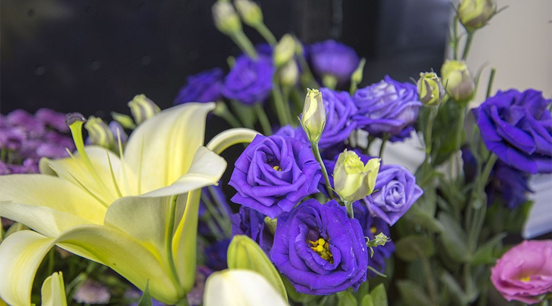

经常会有人来咨询哪些花卉适宜家庭摆台花，既能彰显花的婀娜多姿、楚楚动人，又便于养护，上班族回到家中看到闻到这些花儿能缓解疲劳，带来享受的乐趣。
小编在养花的过程中愿意和花友们分享一点建议。在众多的鲜切花中，比较适合家庭摆台花的有百合、玫瑰、康乃馨（香石竹）等。
百合从颜色上可以分为白百合、粉百合、黄百合，当然她们每种颜色还会有好多分类与学名。大家耳熟能详的在市场上常见的有白色香水百合、金黄的黄天霸百合等。百合花朵大，绽放时有特殊的香味，观赏期长，且有百年好合之意，非常适合家庭摆台花。建议：花朵绽放后，第一时间将花药摘除，避免花药成熟后开裂，花粉掉落沾染到花瓣或桌面；花苞下方的第一片叶子需去掉，防止她与花苞抢水分。
玫瑰，这款集万千宠爱于一身，美丽与爱情的化身，是近几年来受人们喜爱的鲜切花中的一匹黑马，所到之处无不所向披靡。市场上多见的玫瑰有红色法兰西和阳光；粉色雪山、艳粉、糖果和粉佳人；白色雪山还有香槟玫瑰。建议：玫瑰杆带刺，可用打刺钳将刺去除，防止扎手；测量容器及水量的高度，水面以下的叶子全部摘除；45°斜剪根部再插入花器中，提高吸水性。
康乃馨也称母亲花、香石竹，花型知性优美，颜色丰富多彩，花期长，也是当今鲜切花的宠儿。常见的康乃馨有红色、粉色、紫色、绿色、橙色，还有黄底红边等双色，小编偏喜爱绿色多一些，生机勃勃、绿意盎然、颇得人心。建议：康乃馨需勤减根换水；康乃馨对释放乙烯的东西敏感，避免与苹果、香蕉、芒果、香芋放在一起，会加速枯萎。
花卉大多都会散发不同程度的香味，这花香可以改善人的情绪，消除疲劳，促进睡眠。但是针对某些特定人群，比如孕妇、婴儿、老年人不建议把摆台放在卧室，我们最好摆放在客厅、书房以及门口玄关处，另外洗手间的玻璃镜旁也是不错的选择。愿这些美丽的花儿能带给你每天的好心情。
